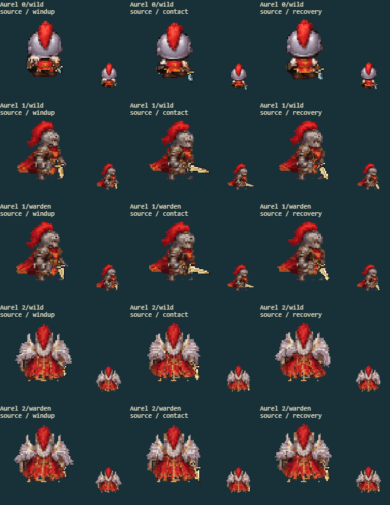
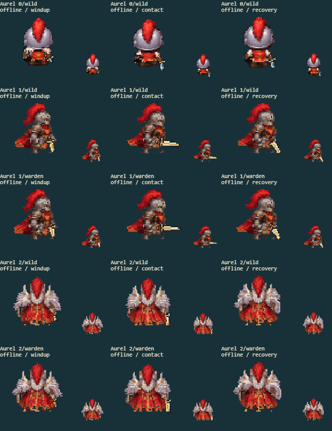

10 separate fights cover every available evolution/path in the source game and rebuilt offline game. The arena keeps combat effects. The other panels show the actual battle sprite at native and enlarged size, before the hit flash.
Full game screenshot · Contact
| Factor | Result | Observed |
|---|---|---|
| Underlying body coverage | pass | Chest and waist stay filled behind the raised sword arm; the front/SW mature body-only sheet retains the complete torso. |
| Connected limbs without a stationary duplicate | pass | Gold forearms change pose while the white apex fur mantle remains an intentional shoulder garment; no second resting forearm appears. |
| Complete costume and palette | pass | Red cape edges, orange hem highlights and dark folds remain visible in both builds, including the exact mature knight example. |
| Hand?weapon attachment | pass | The sword handle follows its painted glove through windup, forward contact and lowering recovery; shield and sword remain on their assigned hands. |
| Silhouette and cell bounds | pass | Helmet plume, fur mantle, full cape and sword fit in the cell in the decoded front, side, rear and falling samples. |
source

offline

All eight facings: art form 0 · art form 1 · art form 2